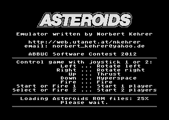
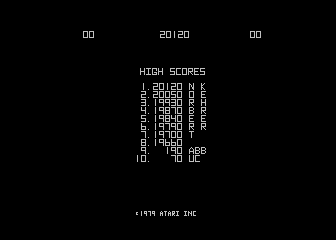
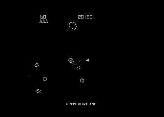
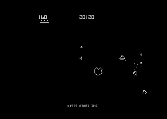

The program can be downloaded as an ATR file here: asteroids.atr
In the following you will first see some screenshots of the running game and then find a description on how to use the emulator in English and in German.
|  |  |
|  |  |
Here is a video of the emulator:
************* E N G L I S H D E S C R I P T I O N *************
1. Quick Start
==============
At the beginning of the description of this Asteroids emulator for the
Atari 800 XL there are short instructions for impatient, experienced users.
They quickly describe how to install and execute the emulator and the ROMs.
The later sections contain more information and a detailed description of
these steps.
The following steps are necessary:
a) Format a disk with DOS 2.5 and copy DOS to it (or create an atr file)
b) Copy the emulator program "asteroid.xex" to the disk (or the atr file)
c) Extract the Asteroids ROM files from your arcade machine or get them from
the internet (only if entitled). MAME ROM files work, but you have to put
an "R" in front of the MAME file name. You need the following four files
(in MAME contained in "asteroid.zip"):
Atari file MAME file Contents
---------------------------------------------
R035127.02 035127.02 Vector ROM
R035143.02 035143.02 Program ROM 1
R035144.02 035144.02 Program ROM 2
R035145.02 035145.02 Program ROM 3
d) Copy the four ROM files (with the "R" at the beginning) to the disk (or the
atr file). The disk's directory should then look like this:
DOS.SYS
DUP.SYS
ASTEROID.XEX
R035127.02
R035143.02
R035144.02
R035145.02
e) Boot disk (or atr file), execute "asteroid.xex", and follow the on-screen
instructions
2. The Asteroids Arcade Machine
===============================
In 1979 Atari launched the aracade machine "Asteroids". The game was
developed by Lyle Rains and Ed Logg and was one of the biggest successes
in the history of video games.
The game principle was implemented in the arcade machine as a so-called
vector game with a 6502 CPU and Atari's custom-made video hardware,
the Digital Vector Generator. Also the sound effects were not produced
by a standard sound chip but were implemented with special circuitry
for each effect.
The arcade game was later ported to many different hardware platforms up
to today's smartphone era. Not many of these ports offer the same
pleasant and elegant game play as the arcade original, though. Even
Atari's own version for their 8-bit home computers ist not very close
to the original.
3. Asteroids Emulator on the Atari 800XL
========================================
Since the nineties, arcade emulators like MAME can emulate the classics
like Asteroids on the PC or the Mac. This program is an Asteroids emulator
for the Atari 800XL. The "emulation" of the arcade machine's CPU is done
by the 6502 processor of the 8-bit Atari. The video and sound hardware is
simulated by the Asteroids emulator program.
As in other emulators like Altirra or MAME, this program contains no
software of the original game developer or other third-party software or
parts thereof. It only simulates the arcade machine hardware for the original
Asteroids program which has to be provided in the form of ROM files by the
legally entitled user.
4. Installation of the Asteroids ROM Files
==========================================
The Asteroids emulator is contained in a file called "asteroid.xex". For
the interpretation of the original game the Asteroids ROM files are needed.
You have to copy these files together with "asteroid.xex" to a DOS 2.5 disk.
The Atari DOS is needed by the emulator for disk access to load the ROMs.
The ROM files have the same format as for the well-known MAME emulator.
Also the file names are the same. Unfortunately, DOS has problem with the
MAME file names, which consist only of digits. Therefore you have to put
an "R" in front of each MAME file name. You have to copy the following
four files to your disk:
Atari file MAME file Contents
---------------------------------------------
R035127.02 035127.02 Vector ROM
R035143.02 035143.02 Program ROM 1
R035144.02 035144.02 Program ROM 2
R035145.02 035145.02 Program ROM 3
You can read out the ROM files from your arcade machine or - if you have
no ROM reading equipment available - download them from the internet (search
for "MAME ROMs"). Please note that only the ROMs of the (most common) second
version of the Asteroids ROMs (Revision 2) will work. Often the MAME ROMs
are packed into one file called "asteroid.zip". This file has to be unpacked
first, then you get the needed four files.
To assemble the disk or the atr file, tools like "makeatr", "AtrUtil", or
"dir2atr" are recommended.
The complete disk (or atr file) should then contain the following files:
DOS.SYS
DUP.SYS
ASTEROID.XEX
R035127.02
R035143.02
R035144.02
R035145.02
5. Using the Emulator
=====================
The Asteroids emulator is started by executing "asteroid.xex" in DOS. Then
a start screen appears, and the ROM files are loaded. The progress indicator
for that can be found on the bottom right of the screen.
After the ROMs are loaded, you can select your language with the joystick in
port 1. This selection corresponds to the DIP switch selection which the
original arcade machine offered to the operators.
By pressing the fire button or the "Select" key you start the emulation.
Asteroids is switched to free-play mode here, i.e. it is not necessary to
"insert" coins. A game can be started in one-player mode with the key "Start" or
with the fire button of the joystick in port 1. For a two players game you
start with "Select" or the port 2 fire button.
It is the objective of the well-known game to destroy all Asteroid pieces with
your space ship. The ship can be rotated left and right with the joystick and
shots can be fired with the fire button. Moving the joystick up generates a
thrust, moving it down performs a hyperspace jump.
In two-player mode each player controls the game with the joystick in his
respective port.
Now have fun with the classic Asteroids on your classic 8-bit Atari!
Norbert
************* G E R M A N D E S C R I P T I O N *************
1. Schnellstart
===============
Zu Beginn der Beschreibung dieses Asteroids-Emulators für den Atari
800 XL soll eine Kurzanleitung für ungeduldige, erfahrene Benutzer stehen.
Darin wird knapp beschrieben, wie man den Emulator und die ROMs installiert
und ausführt. In den folgenden Kapiteln wird dann alles nochmals ausführlich
erläutert.
Die folgenden Schritte sind erforderlich:
a) Diskette mit DOS 2.5 formatieren und DOS darauf kopieren (bzw. atr-File
erstellen)
b) Emulator-Programm "asteroid.xex" auf die Diskette (oder atr-File) kopieren
c) Asteroids-ROM-Dateien aus dem Automaten auslesen oder über Internet
besorgen (nur Nutzungsberechtigte). MAME-ROM-Dateien funktionieren,
allerdings muss ein "R" vor den Dateinamen gestellt werden. Es werden
folgende vier Dateien benötigt (bei MAME in "asteroid.zip" enthalten):
Atari-Datei MAME-Dateiname Inhalt
---------------------------------------------
R035127.02 035127.02 Vector ROM
R035143.02 035143.02 Program ROM 1
R035144.02 035144.02 Program ROM 2
R035145.02 035145.02 Program ROM 3
d) Die vier ROM-Dateien (mit dem "R" am Beginn) ebenfalls auf die Diskette
kopieren bzw. auf das atr-File kopieren. Das Inhaltsverzeichnis der Diskette
muss dann so aussehen:
DOS.SYS
DUP.SYS
ASTEROID.XEX
R035127.02
R035143.02
R035144.02
R035145.02
e) Diskette (oder atr-Datei) booten und "asteroid.xex" ausführen und den
Anweisungen folgen
2. Der Asteroids-Spielautomat
=============================
Im Jahr 1979 brachte die Firma Atari den Spielautomaten "Asteroids"
auf den Markt. Das Spiel wurde von Lyle Rains und Ed Logg entwickelt
und war einer der größten Erfolge in der Geschichte der Videospiele.
Das Spielprinzip wurde im Automaten als sogenanntes Vektorspiel
mit einer 6502-CPU und einer eigenen von Atari entwickelten
Videohardware, dem sogenannten Digital Vector Generator, umgesetzt.
Auch die Soundeffekte wurden nicht durch einen Standardsoundchip
sondern mit Spezialschaltkreisen für jeden Effekt erzeugt.
Dem Spielautomaten folgten viele Portierungen auf die unterschiedlichsten
Plattformen bis herauf in die heutige Smartphone-Ära. Mit dem angenehmen
und elegantem Gameplay der Originalversion können aber nur wenige dieser
Ports mithalten. Selbst Ataris eigene Version für ihre 8-Bit-Rechner
ist nicht sehr originalgetreu.
3. Asteroids-Emulator auf dem Atari 800XL
=========================================
Mit Videospielemulatoren wie MAME konnten ab den Neunziger-Jahren
Spielhallenklassiker wie Asteroids auf PCs und Macs emuliert werden. Das
vorliegende Programm ist ein Emulator für den Asteroids-Spielautomaten
für den Atari 800XL. Die "Emulation" der Automaten-CPU übernimmt dabei
der 6502-Prozessor des 8-Bit-Ataris. Die Video- und Soundhardware wird
softwaremäßig durch das Asteroids-Emulatorprogramm simuliert.
Analog zu Emulatoren wie Altirra oder MAME enthält dieses Programm
keinerlei Software des Herstellers der Originalmaschine oder andere fremde
Softwareteile. Es simuliert lediglich die Automatenhardware anhand der
vom berechtigten Benutzer bereitzustellenden Programmdateien (ROM-Dateien)
des Asteroids-Automaten.
4. Installation der Asteroids-ROM-Dateien
=========================================
Der Asteroids-Emulator ist zur Gänze in einer ausführbaren Datei namens
"asteroid.xex" enthalten. Für die Interpretation des Originalspiels werden
die ROM-Dateien von Asteroids benötigt. Diese Dateien sind zusammen mit
"asteroid.xex" auf eine DOS-2.5-Diskette zu kopieren. Das Atari-DOS
wird vom Emulator für die Diskettenzugriffe zum Laden benötigt.
Die ROM-Dateien für den Emulator haben das selbe Format wie für den
bekannten MAME-Emulator. Auch die Dateinamen sind wie in MAME gewählt,
allerdings bestehen die Filenamen der MAME-ROMs nur aus Ziffern, was DOS
leider Probleme bereitet. Daher ist den MAME-Dateinamen ein "R"
voranzustellen. Auf die Diskette sind daher zusätzlich folgende vier
Dateien zu kopieren:
Atari-Datei MAME-Dateiname Inhalt
---------------------------------------------
R035127.02 035127.02 Vector ROM
R035143.02 035143.02 Program ROM 1
R035144.02 035144.02 Program ROM 2
R035145.02 035145.02 Program ROM 3
Die ROM-Dateien kann man aus seinen Automaten-ROMs auslesen oder, falls
kein Auslese-Equipment zur Hand ist, auch aus dem Internet beziehen
(Suchbegriff "MAME ROMs"). Achtung, es funktionieren nur die ROMs der
(bei weitem häufigsten) zweiten Asteroids-Version (Revision 2). Die
MAME-ROMs liegen oft als nur eine einzige zip-Datei mit dem Namen
"asteroid.zip" vor. Diese Datei muss zuerst entpackt werden. Dann
hat man die benötigten vier ROM-Dateien.
Für das Zusammenstellen der Diskette bzw. des atr-Files sind Tools wie
"makeatr", "AtrUtil" oder "dir2atr" zu empfehlen.
Die fertige Diskette (oder atr-Datei) sollte dann folgende Dateien
enthalten:
DOS.SYS
DUP.SYS
ASTEROID.XEX
R035127.02
R035143.02
R035144.02
R035145.02
5. Bedienung des Emulators
==========================
Der Asteroids-Emulator wird gestartet, indem das Programm "asteroid.xex"
aus DOS heraus ausgeführt wird. Es erscheint dann ein Startbildschirm und
die ROM-Dateien werden geladen. Die Fortschrittsanzeige erscheint rechts
unten am Bildschirm.
Nach dem Laden der ROMs kann man die gewünschte Sprache mit dem Joystick
in Port 1 auswählen. Diese Auswahl enstspricht den DIP-Schaltern, die der
Originalautomat dem Aufsteller zur Wahl der Sprache des Spiels zur Verfügung
gestellt hat.
Mit dem Druck auf den Feuerknopf oder auf "Select" startet die Emulation.
Asteroids ist hier auf den Free-Play-Modus eingestellt. Das heißt, ein
"Einwerfen" von Münzen ist nicht notwendig. Ein Spiel kann im 1-Spieler-Modus
mit der Taste "Start" oder dem Feuerknopf des Joysticks in Port 1 gestartet
werden. Für zwei Spieler kann man mit "Select" oder dem Port-2-Feuerknopf
starten.
Das Ziel des bekannten Spiels ist es, mit seinem Raumschiff alle
Asteroidenbrocken zu zerstören. Das Raumschiff wird dabei mit dem Joystick
nach links und rechts gedreht. Geschossen wird mit dem Feuerknopf. Ein Schub
der Triebwerke des Schiffes wird durch Bewegen des Joysticks nach vorne
bewirkt. Zieht man den Joystick nach hinten, macht man einen
"Hyperraumsprung".
Beim Zweispielermodus kommen die beiden Spieler abwechselnd an die Reihe.
Dabei steuert Spieler 1 mit dem Joystick in Port 1 und der zweite Spieler
mit jenem im Port 2.
Jetzt viel Spaß mit dem Klassiker Asteroids auf eurem klassischen 8-Bit-Atari!
Norbert